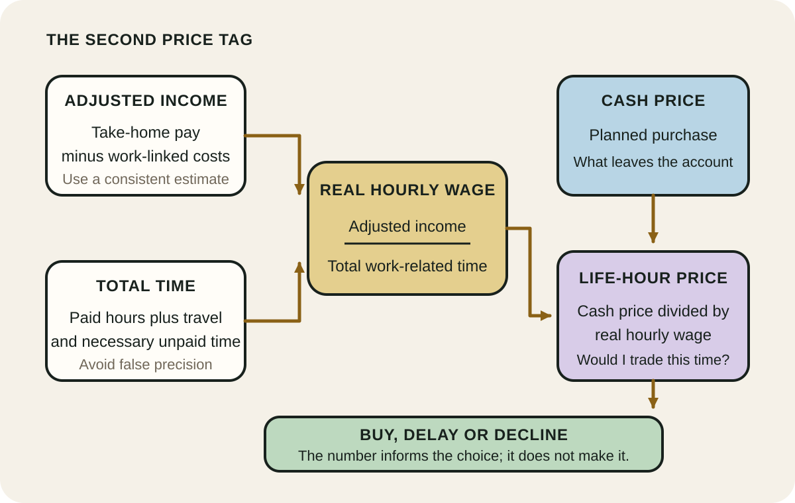
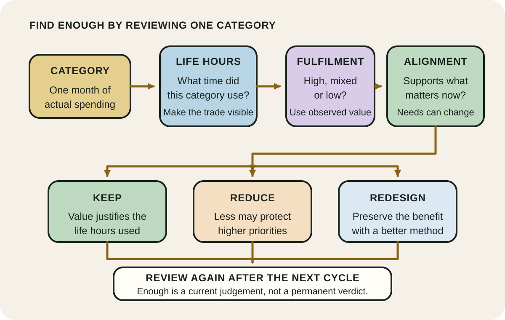
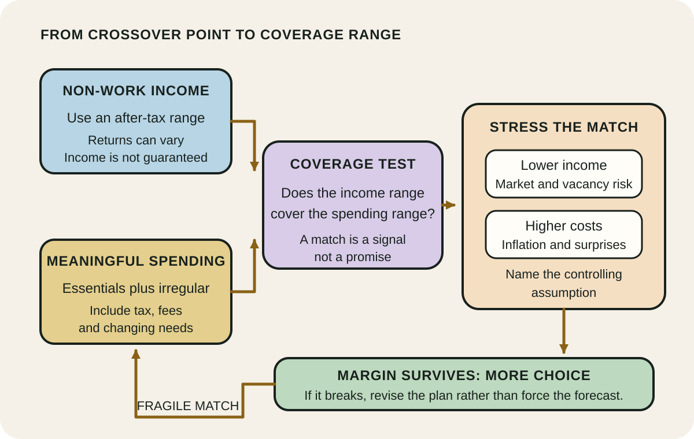

Daily lesson ·
Your Money or Your Life
Reconnect money with the time used to earn it, test whether spending delivers enough value, and measure financial freedom without pretending future income is guaranteed.
Idea 1
Price spending in life energy #
The idea
Robin and Dominguez argue that money represents life energy: the finite time and attention exchanged to obtain it. They therefore replace headline hourly pay with a real hourly wage. Start with take-home income, subtract costs created by work, and divide by all the time work actually consumes, including travel and other necessary unpaid time.
A purchase can then be expressed in life hours by dividing its price by that real hourly wage. The point is not to make every choice grim or to declare money bad. It is to expose a hidden trade: a low sticker price can still require a meaningful part of a day, while a costly item may be worthwhile if it genuinely serves the life being funded.

Why it matters
Normal prices hide the time, travel and supporting costs behind income. Making those inputs visible can interrupt automatic spending and help compare a purchase with alternatives such as rest, savings or time with other people.
Apply it today
Estimate one month's take-home pay, work-linked costs and total work-related hours. Divide adjusted income by total hours to get a rough real hourly wage.
Convert one planned discretionary purchase into life hours. Write buy, delay or decline, plus the reason, before opening the checkout.
Caveat or failure mode
Real hourly wage is a decision aid, not precise cost accounting. Commute, care, clothing, recovery and convenience costs may have several causes, and buying time can improve wellbeing. Use a consistent rough estimate to reveal trade-offs, not to shame necessary spending or optimise every minute.
Idea 2
Ask whether spending delivers enough #
The idea
The authors ask readers to track money flowing in and out, convert spending categories into life energy, and review each category for fulfilment and alignment with purpose. A category can be expensive yet deeply worthwhile, or familiar and convenient while adding little value.
Their fulfilment curve describes a progression from survival and comfort through genuine satisfaction to excess, where additional consumption can add maintenance, clutter or distraction. The practical move is to identify enough for each category rather than assume that either more spending or less spending is always better.

Why it matters
A conventional budget records where money went but may not show whether it improved life. Adding fulfilment and values to the review helps distinguish meaningful priorities from recurring spending that survives only through habit.
Apply it today
Choose one discretionary category from the last month and estimate the life hours it used.
Mark its fulfilment and values alignment as high, mixed or low. Decide one small keep, reduce or redesign action for the next purchase.
Caveat or failure mode
Fulfilment is subjective and can change with health, dependants, accessibility, culture and season. Low spending is not moral superiority, and deprivation can damage wellbeing or shift costs onto others. Review patterns over time and protect essentials before reducing a category.
Idea 3
Measure freedom with a stress test #
The idea
Robin and Dominguez call the crossover point the moment when monthly investment income meets monthly expenses. Plotting both over time turns financial independence from a vague wish into a visible relationship between what life costs and what invested capital may provide.
The durable insight is optionality: lower recurring needs and reliable non-work income can reduce dependence on the next pay cycle. The projection itself is not a promise. A responsible reading treats the crossover as a scenario to test against lower returns, higher costs and changing needs rather than as a guaranteed retirement date.

Why it matters
A visible coverage relationship can connect today's spending and saving decisions with future choice. Stress-testing prevents one attractive return assumption from disguising how much the plan depends on markets, inflation or an unrealistically narrow estimate of needs.
Apply it today
Write a rough monthly range for essential and meaningful spending. Do not remove irregular costs just to improve the result.
Compare it with dependable after-tax non-work income, then lower that income and raise costs. Record the largest assumption that controls the outcome.
Caveat or failure mode
Investment income and asset values fluctuate, and diversification reduces some risks rather than removing them. Inflation, tax, fees, longevity, sequence risk and changing responsibilities can move both sides of the estimate. Use current Australian guidance and licensed advice when a real investment or retirement decision requires it.
Knowledge check · 6 questions
Learning check
Answer all 6, then check your answers. Your first result stays in this browser, and each explanation appears after you check. A 3-question review can appear on the homepage from tomorrow.
6 questions not yet answered.
Today's experiment · 10 minutes
Put a life-hour price on one receipt
- Minutes 0 to 3: estimate monthly take-home income, work-linked costs and total work-related hours, then calculate a rough real hourly wage.
- Minutes 3 to 5: choose one recent discretionary purchase and convert its price into life hours.
- Minutes 5 to 7: mark the purchase's fulfilment and values alignment as high, mixed or low.
- Minutes 7 to 9: decide keep, reduce or redesign for the next similar purchase, and write one sentence explaining why.
- Minute 10: note one uncertainty in your estimate so the number remains a prompt, not false precision.
Observable result: One receipt with a visible life-hour cost, a value judgement, one next-purchase decision and one named uncertainty.
Retrieval practice
Spaced recall
- From The Psychology of Money: how would a personal definition of enough change the category you just reviewed?
- From Four Thousand Weeks: which finite-time trade becomes visible when a purchase is converted into life hours?
- From The Little Book of Common Sense Investing: which costs or risks must remain visible when projected investment income is tested?
Verification
Source notes
These links support the attributed claims and edition details; applications and extensions are labelled in the lesson.
- Vicki Robin: official summary of the nine-step program
- Penguin: fully revised and updated 2018 edition details
- Australian Government Moneysmart: track your spending
- Australian Government Moneysmart: choose investments for goals, time and risk
- Australian Government Moneysmart: diversification reduces some risk, not all risk
- PNAS: experimental evidence that buying time can improve wellbeing
One-sentence takeaway